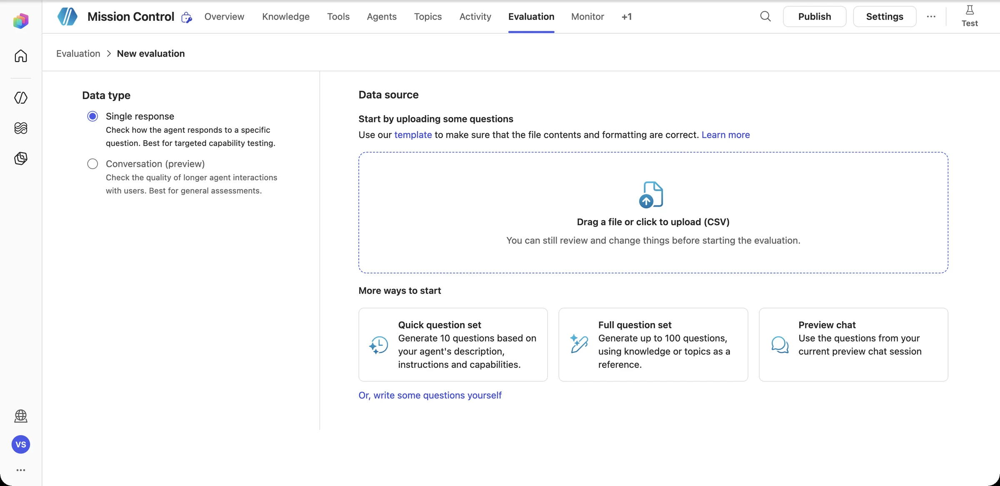
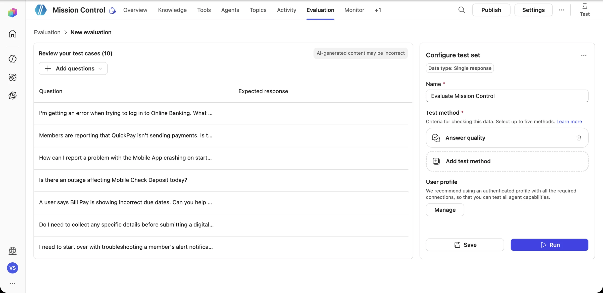
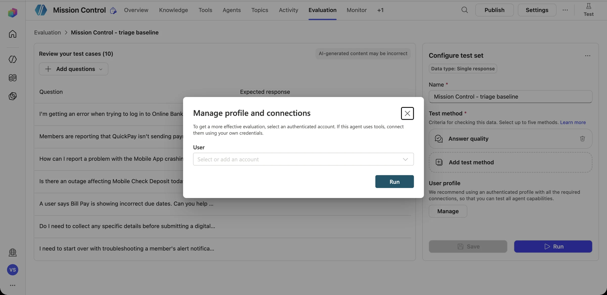
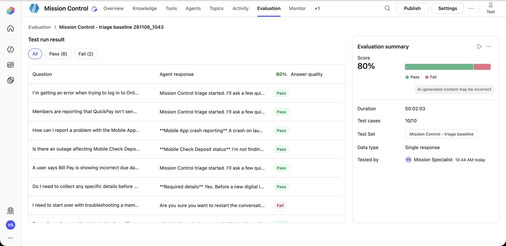
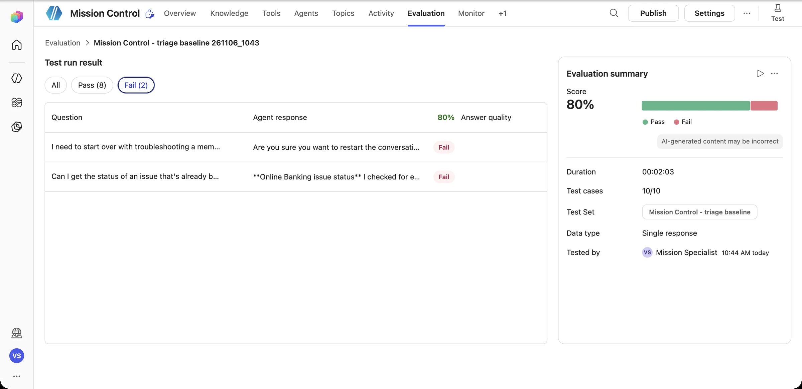
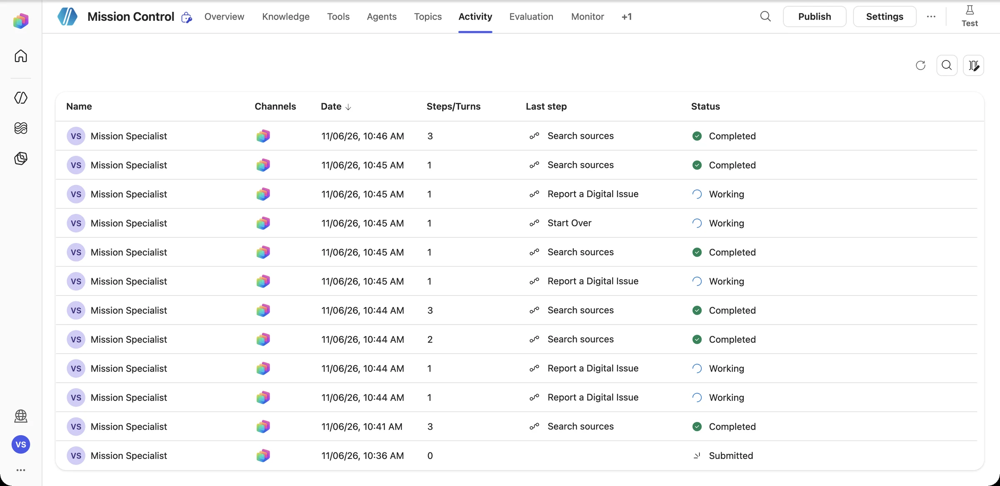
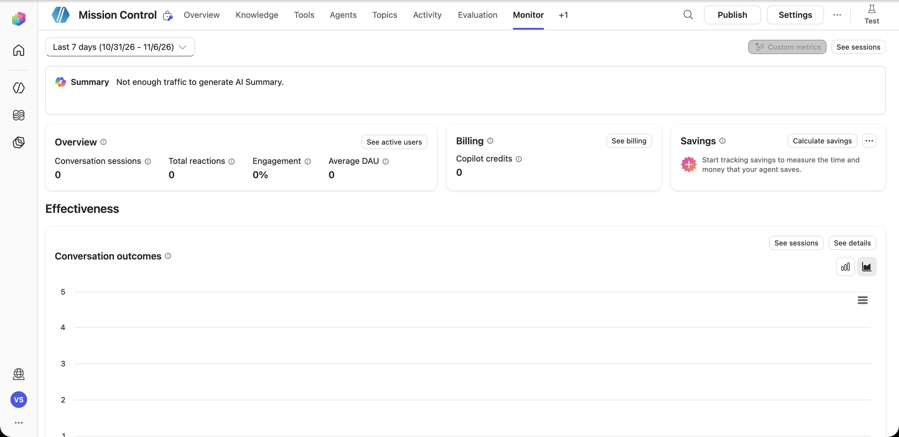

Briefing Test
“It worked when I tried it” is not a test plan. Mission Control has to prove that it works on the good days, and that it fails honestly on the bad ones.
The agent test pyramid
Your diagnostic instruments
Test your agent
Chat live. Start a fresh conversation for every test so leftover variables don't mislead you.
Variables
Open the variables view from the test pane to see what each topic captured.
Activity
See which topic, tool, or knowledge source the orchestrator chose, and why.
Run history
Inputs, outputs, and the exact failing step (with its HTTP status) for every flow run.
Evaluation
Build reusable test sets and score answers against expectations.
Monitor
Watch health, errors, and outcomes once real people use the agent.
Scenario matrix
| ID | Scenario | Type | Pass criteria |
|---|---|---|---|
| S1 | Known issue (app crash after the 8.4.0 update) | Success | Guidance + DSI-1041, no new record |
| S2 | New issue, complete details (Bill Pay BIL-512) | Success | A new record exists; the reported ID matches the list |
| S3 | Incomplete report (“deposits are broken”) | Success | Follow-up questions; no action until complete |
| S4 | Duplicate report (QuickPay pending) | Edge | Returns DSI-1042; record count unchanged |
| S5 | Sev 1 (double debit) | Edge | Approval requested; “pending” message; no write before approval |
| S6 | Connector permission revoked (403) | Failure | The agent says it couldn't create the record; no fake ID |
| S7 | Invalid service (“the toaster app”) | Failure | Re-prompt, then a graceful fallback |
| S8 | Out of scope (“what's the mortgage rate?”) | Boundary | Politely declines and stays on mission |
Download the full matrix with prompts: test-scenarios.md.
“Created issue DSI-.” Wait, what?
Overnight, a SharePoint admin cleaned up site permissions, and the account behind Mission Control's connection lost access to the Digital Issue Register. In the morning, a user reports a new issue. The Create item step fails with 403 Forbidden… but the flow carries on, and the agent cheerfully announces: “Done! I've created issue DSI-.” No record exists. Nobody is investigating. The member's problem quietly disappears.
Diagnose
Find the failed step in the run history. What was the status code? Whose connection was it?
Contain
Make the workflow catch the failure (a run-after-failed path) and return Status = "Failed" with a reason.
Be honest
The agent branches on Status, apologizes, gives a fallback (email digital-oncall), and never shows an ID it didn't receive.
Prevent
Use a dedicated service account with list-level access, monitor flow failures, and document the connection owner.
Run the success and failure scenarios
What you'll do
- Run scenarios S1–S8 in fresh test conversations
- Trace each one in Activity and the workflow run history
- Inject the 403 failure and harden the workflow and topic
- Save your scenarios as a reusable evaluation test set
Pre-flight
- The Mission 06–07 workflow is connected to the register
- Download test-scenarios.md
- Team mode: the Risk Reviewer keeps score in the matrix
-
Create an evaluation
Open the Evaluation tab → Create a test set. Choose Single response. You can upload a CSV, generate a Quick question set (10 questions), generate a Full question set (up to 100), or reuse questions from your current preview chat.

-
Generate a baseline, then add your own scenarios
Select Quick question set. Copilot Studio writes 10 questions from your agent's description and instructions. Then select Add questions and add S1–S8 from test-scenarios.md, each with an expected response.

Name the set, keep Answer quality as the test method (add Exact match or Keyword match for IDs), and select Run. When the dialog asks for a profile, use an account that has the connections your tools need.

-
Read the scoreboard
Our baseline took 2 minutes and scored 80%: 8 passes and 2 failures.

Filter to Fail (2). Each failure is a lesson:

Failure Root cause Fix “…start over with troubleshooting…” → “Are you sure you want to restart the conversation?” The words “start over” triggered the Start Over system topic Tighten that topic's trigger description, or turn it off for this agent “Status of an existing OLB issue?” → “I checked for existing OLB records…” The agent claimed a lookup it can't do, because no register tool was connected yet Connect the Mission 06 register, and add a rule: only say you checked a system if a tool ran The passes can lie too One passing answer said “I’m not finding an active Mobile Check Deposit outage in the Digital Issue Register” when the agent had no access to the register. Answer quality looked fine, but the claim was false. Read the passes as well as the fails. -
Inject the 403 Surprise
Make the register fail on purpose. Ask your instructor to remove your connection account's access to the list, or point Get items at a list you can't read. Then run S5 again. Without hardening, the flow fails and the agent may still imply that it worked.
Harden it in Log Digital Issue:
- After Get items, add a Respond to the agent whose … → Run after is set to has failed and has timed out only.
- Return
Outcome = REGISTER_UNAVAILABLE,IssueId = (blank), andMessage = The issue register could not be reached (permission or connection error). Nothing was recorded. - Add to the tool description: If Outcome is REGISTER_UNAVAILABLE, tell the user nothing was recorded and give them the escalation contact.
I couldn't reach the Digital Issue Register (access error), so nothing was recorded. Please report it to digital-oncall@contoso.example and include the details above. -
Trace it end to end
Activity lists every test conversation: when it ran, how many steps it took, the last step (which topic or tool), and whether it finished. Open any row to replay its decision path.

Monitor rolls this up into conversation outcomes (resolved, escalated, abandoned), reactions, sentiment, and Copilot credit use. After launch, this is your operations dashboard.

-
Re-run and compare
After your fixes, open the test set and run it again. Put both scores side by side. Your showcase tells the story of the before and after, not just the final number.
Telemetry check · Mission 09
Flight recorder
- Keep the scoreboard: mark each scenario Pass, Fail, or Flaky (passes sometimes).
- For every Fail, write the root cause in one sentence: knowledge, topic, workflow, connector, or instructions?
- Pick the most dangerous failure, the one a member would feel. That goes in the showcase as “what we fixed.”
Debrief Mission 09
Happy paths demo well. Failure paths are what build trust.
Activity and the run history tell you exactly which step broke and why.
No confirmed ID means no success message.